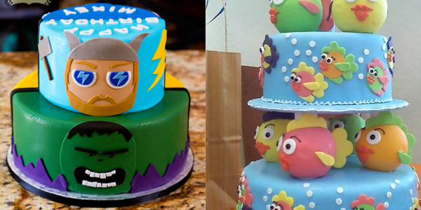

What Does Your Cake Design Say About You?
Ever wondered what your cake design says about your personality? At Cakelia, we believe that cakes are more than just a sweet treat – they’re an extension of who you are! From minimalist to extravagant, the cake you choose can tell the world a lot about you. So, let’s take a fun dive into the cake designs that match different personalities, and discover what your virtual cake design says about you!
1. The Minimalist Cake Designer
You’re drawn to the clean lines, the simplicity, and the elegance of a minimalist design. You believe in the saying "less is more" and tend to keep things subtle yet stunning. Just like your choice in fashion or interior design, you gravitate toward simplicity and tranquility. Your friends admire your ability to make any situation calm and graceful. In Cakelia, your cake would have soft hues, elegant shapes, and a restrained, sophisticated charm. Think pastels, geometric shapes, and a touch of gold.
Personality Trait: Quiet, thoughtful, and efficient. You like things streamlined and effortless but with a touch of class.
2. The Over-the-Top Creator
Bright, bold, and attention-grabbing – if you love over-the-top cake designs, you’re the kind of person who embraces the spotlight and lives life to the fullest. You’re a visionary with no fear of standing out. Your cakes would feature crazy colors, lots of sparkle, and whimsical designs. From neon-colored frosting to massive tiered structures, you’re all about making a statement. Your friends think you’re adventurous and unpredictable, always ready for an exciting new adventure.
Personality Trait: Fun-loving, daring, and spontaneous. You’re never afraid to push the limits of creativity and have a blast doing it.
3. The Nature Lover
For you, a cake isn’t just a dessert; it’s a piece of art inspired by nature. Think rustic, earthy tones, delicate flowers, and textures that mirror the beauty of the natural world. You’re grounded, peaceful, and value authenticity in every aspect of life. Cakelia could design a nature-inspired cake with blooming flowers, textured fondant that resembles tree bark, and natural color palettes like olive greens and soft browns. Your ideal celebration is cozy, intimate, and full of natural beauty.
Personality Trait: Calm, thoughtful, and environmentally conscious. You value the simple things in life and believe in a connection with the earth.
4. The Quirky Innovator
You love the weird and wonderful, and your cake design shows it! Whether it's a space-age cake with rocket ships and stars or a playful dinosaur cake, you’re all about bringing fun and creativity into everything you do. Cakelia’s interactive tools would let you create a cake with quirky details, like moving elements or unexpected textures. You’re always thinking outside the box, and your friends never know what to expect – which is exactly what you want.
Personality Trait: Creative, playful, and unconventional. You take pride in being one-of-a-kind, and your celebrations reflect your vibrant personality.
Ready to Discover Your Cake Design?
At Cakelia, your cake is a blank canvas. Whether you prefer simple elegance or wild creativity, we’ve got the tools to help you design the perfect virtual cake that reflects your personality. So, what does your cake say about you? Find out now and start creating your unique cake masterpiece!